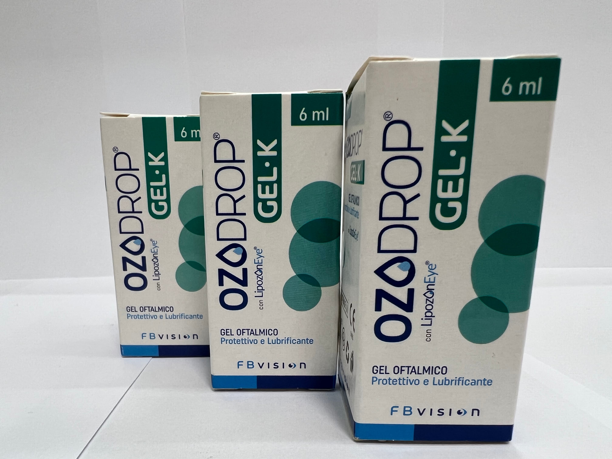

Контактная информация:
Цена: 1150 грн/уп.
В наличии
Производитель: Италия
Цена: 1150 грн/уп.
В наличии
Именно в FarmItal вы можете купить гель Озодроп,Ozodrop в Украине, Гарантированно Качественный!
Доставка Ozodrop осуществляется транспортными компаниями, сроки выполнения заказа оговариваются менеджером Фармитал. Вы можете заказать Озодроп в городах: Одесса, Херсон, Чернигов, Северодонецк, Бердянск, Бровары, Днепр, Винница, Киев, Славянск, Полтава, Краматорск, Белая Церковь, Каменское, Мариуполь, Черновцы, Александрия, Каменец- Подольский, Львов, Запорожье, Кропивницкий, Житомир, Ивано-Франковск, Сумы, Черкассы, Константиновка, Мелитополь, Кривой Рог, Ровно, Луцк, Никополь, Павлоград, Ужгород, Кременчуг, Лисичанск, Хмельницкий, Тернополь, Харьков, Николаев, а также других населенных пунктах Украины.
Гель-капли для закапывания в глаза - во флаконе 6ml
LipozonEye (озонированное самоконсервированное растительное масло, соевые фосфолипиды, гидроксиэтилцеллюлоза, борная кислота, тетраборат натрия, динатрия эдетат натрия, PHMB, колифор Р407, вода очищенная.
Защитный, смазочный, увлажняющий и успокаивающий офтальмологический гель на основе LipozonEye (озонированное растительное масло, соевые фосфолипиды), гидроксиэтилцеллюлозы (HEC) и колифора. Это полезно для лечения сухости глаз даже при наличии раздражения, вызванного условиями окружающей среды или механическим воздействием, например, ношения контактных линз. Наличие растительного масла и липосом способствует стабилизации липидной фазы слезной пленки, уменьшая испарение водной фазы и гарантируя немедленное облегчение. OZODROP GEL также обладает способностью образовывать стойкую и однородную пленку на поверхности роговицы.
Ozodrop – это смазочный, защитный, увлажняющий и успокаивающий офтальмологический гель на основе гипромелозы и озонированного растительного масла.
Хранить плотно закрытыми при температуре от 5°C до 25°C. Держите подальше от источников тепла.Не используйте продукт по истечении срока годности.Срок действия после открытия: 30 дней.